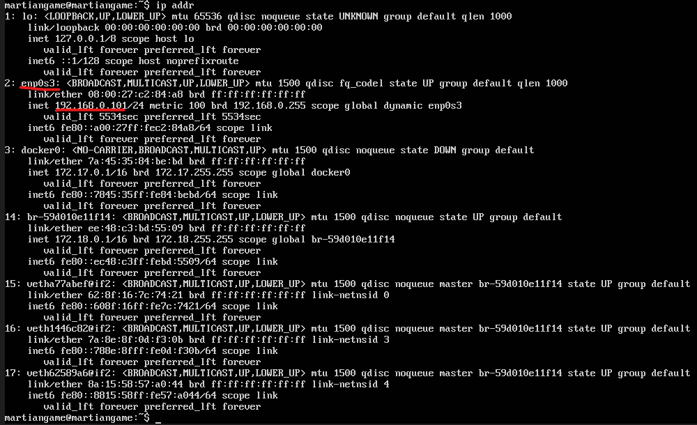

First, decide on a hosting service of choice. The original experiments have been ran and tested on a digitalocean droplet, however any service which provides SSH access will work just as well.
Recommended specs:
The operating system that should be installed is Ubuntu Server. The installation .iso can be found here,
and official installation instructions can be found here. This installation guide was
tested on Ubuntu version Ubuntu 24.04.4 LTS .
The installation process is largely automized and shouldn't take more than an hour. If any issues arise, the internet holds a great deal of tutorials which should solve them.
After installing Ubuntu Server, update the package manager:
sudo apt update && sudo apt upgrade
Install git and download the MartianGame repository:
sudo apt-get install git
git clone GitHubDanya/MartianGamePublic
cd MartianGamePublic
The secrets file (called .env) holds secret passwords and keys which are used in sensitive areas. This file includes your API key, login information
for the research dashboard and the database password.
This file is not shared in the github repository for security reasons. You can either use an existing file (do this if you have been given this file by your access provider), or you can create such file manually.
If you have this file provided to you, then you need to transfer it to the server. This can be done using SSH.
Run the follwing commands if ssh has not been installed already:
sudo apt install ssh
sudo systemctl enable ssh
sudo systemctl start ssh
sudo systemctl status ssh
If everything is lit up green you're good to go. If not, your firewall is probably blocking ssh access. Look up how to unblock port 22 on your hosting service provider.
You have to find out the IP address of your linux machine. Scroll down in this guide to the "Locate the ip address of the machine" section and follow it's instructions.
Now open the command line on your computer which holds the .env file. Right click the folder which contains the file and
click Copy as path . Then, in your terminal run the following (REPLACE values in curly braces with your known values):
cd {PASTE_COPIED_PATH}
scp .\.env {UBUNTU_USER}@{SERVER_IP_ADDRESS}:~/MartianGamePublic
The file should now be on your server.
Files created on Windows get encoded in a way that poses issues for other operating systems. To fix this, you must re-encode it using the UNIX protocol. Run these commands to translate the file on your server:
sudo apt-get install dos2unix
dos2unix ./.env
To do this, you would need to use a text editor like nano. Run this command:
nano .env
Then, populate the file:
MARTIAN_DB_CONNSTRING='Host=db;Port=5432;Username=www-data;Password={YOUR PASSWORD HERE};Database=mgdb'
MARTIAN_DB_PASSWORD='{YOUR PASSWORD HERE}'
MARTIAN_OPENAI_KEY='{YOUR API KEY HERE}'
MARTIAN_PYTHON_SO_PATH='/usr/lib/python3.12/config-3.12-x86_64-linux-gnu/libpython3.12.so'
Replace values inside of curly braces. Delete curly braces after replacing them. Make sure that you copy everything word to word.
* Note that it's not recommended to follow this approach because you have to write down the api key by hand, which leaves a large margin for error. You can create this file on your Windows machine, and then copy it using the steps in the "I already have this file!" tab.
Press Ctrl+O to write changes, and Ctrl+X to exit. You should have a ready-to-go .env file now.
Run the provided installation bash script:
chmod +x ./install-docker.sh
sudo ./install-docker.sh
Troubleshooting:
If you recieve this error, then most likely there is an issue with the way Windows encodes files which is incompatible with UNIX systems. Run these commands to encode the .sh file for unix:
sudo apt-get install dos2unix
dos2unix ./install-docker.sh
sudo ./install-docker.sh
Ensure that docker is running:
sudo systemctl status docker
Troubleshooting:
Docker probably didnt start up automatically. Run:
sudo systemctl enable docker
sudo systemctl start docker
After installing Docker, we have to start up the container. Run these commands:
sudo docker compose up -d
The project should pull the required dependencies and install automatically.
Please be patient as this may take up a lot of time on a low-end system.
After starting up the docker container, you can access it on your local network!
To find out the address of the installation, run the following command:
ip addr
You will be greeted with this:

Dont freak out, we only need the ip address that corresponds to enp0s3, which
is underlined in red. Find what address your machine has recieved and keep it in mind.
You can access the website by typing this ip address in your browser. For example,
on this machine the game will be on 192.168.0.101
If you need to restart the container, run this:
sudo docker-compose restart
If restarting doesn't fix your issue, you can forcefully rebuild the application. This preserves existing data.
sudo docker-compose down
sudo docker-compose up --build --force-recreate
If you need to completely rebuild everything, and also reset the data:
sudo docker-compose down -v
sudo docker-compose up --build --force-recreate
After completing this step, you may encounter some issues. Here are some of the known ones:
This error means that there has been an issue with exposing the http port.
Try to add :80 to the end of the ip address when accessing it in your browser. For example, instead of 192.168.0.101
try 192.168.0.101:80 .
If the prior solution didn't work, then there might be an issue in the nginx config. Input this command:
ls -la
"nginx.conf"
If there is no such file, then the repository had some issues with downloading. Try reinstalling the GitHub repository by running these commands:
cd ../
rm -r MartianGamePublic
git clone GitHubDanya/MartianGamePublic
cd MartianGamePublic
Then go over all steps after "Spin up the Docker container" until you return to this point.
If you dont see any data, then there has been an error accessing the database. Make sure that your .env file is intact and has correct information, then rebuild the docker container.
If the chatbot doesn't respond to your messages, then the most likely culprit is your API key. Ensure that it is spelled correctly in the .env file, then rebuild the docker container.
To make the website accessible to the web, you will need to work with port forwarding.
This is handled by your hosting service, so this step differs depending on what you chose.
A tutorial for doing this on digitalocean can be found here.
Congratulations on successfully completing the setup process for this tool! If you are unable to resolve an issue, please contact your access provider or the repository manager.
Data is accessed by visiting the /api page on the website. Input the login that was set in the .env file,
and you recieve full access to the research center, where you can view and download your data.